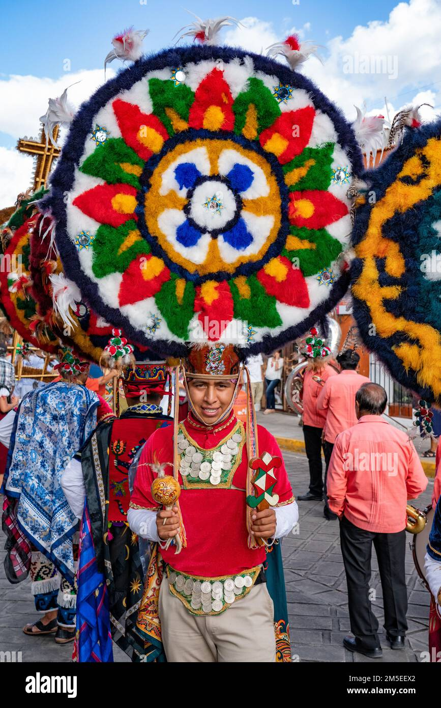

Danza de la PlumaLa danza de la pluma es una de las danzas tradicionales más representativas de México, y su origen se remonta a la época prehispánica. Esta danza es una muestra de la riqueza cultural de los pueblos originarios y su vínculo con la naturaleza y la espiritualidad. En esta danza, los danzantes portan una pluma en la mano, la cual simboliza la habilidad del ave para alcanzar grandes alturas y conectar con el mundo divino. Los pasos y movimientos de la danza de la pluma son precisos y coordinados, y se acompañan de música y canto en náhuatl, lengua de los antiguos mexicanos. A lo largo de la historia, la danza de la pluma ha sufrido diversas transformaciones y adaptaciones, pero siempre ha mantenido su esencia y significado original. Hoy en día, esta danza se sigue practicando en diversas regiones de México y se considera una muestra de la diversidad cultural y la riqueza patrimonial del país. La danza de la pluma es una de las danzas tradicionales más representativas de México, y su origen se remonta a la época prehispánica. Esta danza es una muestra de la riqueza cultural de los pueblos originarios y su vínculo con la naturaleza y la espiritualidad. En esta danza, los danzantes portan una pluma en la mano, la cual simboliza la habilidad del ave para alcanzar grandes alturas y conectar con el mundo divino. Los pasos y movimientos de la danza de la pluma son precisos y coordinados, y se acompañan de música y canto en náhuatl, lengua de los antiguos mexicanos. A lo largo de la historia, la danza de la pluma ha sufrido diversas transformaciones y adaptaciones, pero siempre ha mantenido su esencia y significado original. Hoy en día, esta danza se sigue practicando en diversas regiones de México y se considera una muestra de la diversidad cultural y la riqueza patrimonial del país. |
 |